SONSLAB은 작은 아이디어를 손수레에 싣고, 질문과 실험을 통해 더 큰 가능성으로 옮겨가는 창의 실험실을 의미합니다.
SONSLAB의 로고는 단순한 물음표가 아니라, 호기심을 실어 나르는 손수레를 형상화한 디자인입니다. 네 가지 모티브가 한 형태 안에 겹쳐 있습니다 — 손수레, 물음표, 전구, 그리고 두 눈.
로고 속 네 가지 모티브
1 손수레 — 아이디어를 옮기는 힘
손수레는 크고 화려한 기계가 아니지만, 무언가를 직접 싣고, 밀고, 움직이게 만드는 가장 실용적인 도구입니다. SONSLAB도 거창한 말보다 작은 생각을 직접 실험하고 조금씩 앞으로 옮기는 실행력을 중요하게 생각합니다. 손수레는 생각을 현실로 옮기는 도구를 상징합니다.
2 물음표 — 앞으로 나아가게 하는 질문
손수레의 형태를 닮은 큰 물음표는 “왜?”, “어떻게?”, “다르게 할 수 없을까?”라는 질문을 의미합니다. SONSLAB은 정답을 그냥 받아들이는 곳이 아니라, 질문을 통해 새로운 길을 찾아가는 공간입니다.
3 전구 — 손수레에 실린 아이디어
전구는 손수레에 실린 가장 소중한 짐입니다. 바로 아이디어, 깨달음, 창의적인 가능성이지요. 작은 아이디어 하나라도 소중히 싣고, 실험하고 다듬어 콘텐츠 · 기술 · 교육 · 자동화 · 발명으로 발전시킨다는 의미를 담고 있습니다.
4 두 눈 — 관찰하고 발견하는 시선
아래의 두 눈은 손수레의 바퀴처럼 보이면서도, 세상을 관찰하는 눈을 의미합니다. SONSLAB은 그냥 지나칠 수 있는 일상 속에서도 재미있는 질문과 새로운 아이디어를 발견합니다.
로고 시리즈 — 분야별 변형(Variant)
SONSLAB의 로고는 하나의 그림이 아니라, 공통된 베이스 + 분야별로 바뀌는 짐(cargo)으로 이뤄진 변형 시리즈입니다. 손수레 · 물음표 · 두 눈은 그대로 두고, 손수레 위 짐칸에 실리는 아이콘만 바뀌면서 그날의 주제·콘텐츠 카테고리를 표현합니다. "오늘은 어떤 아이디어를 싣고 가는가?"가 짐 자리에 그려진다고 보시면 됩니다.
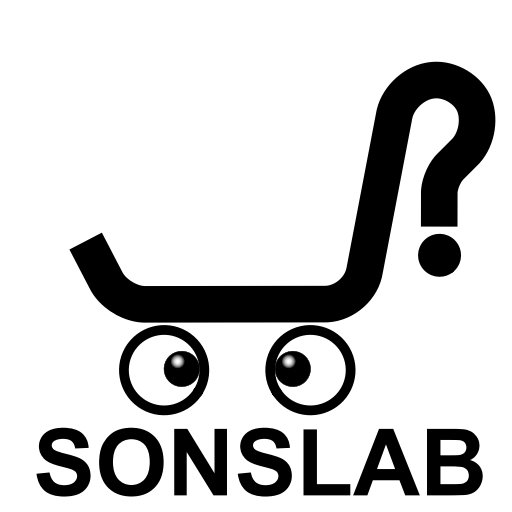
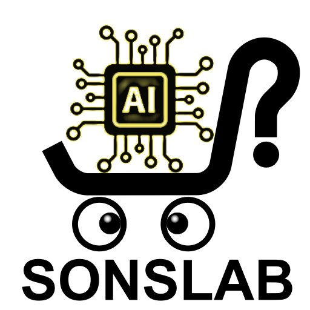
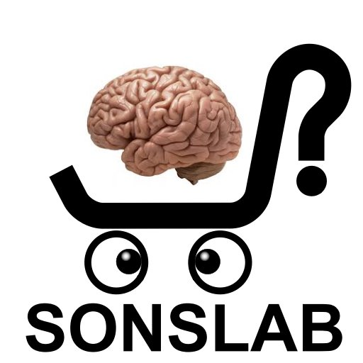
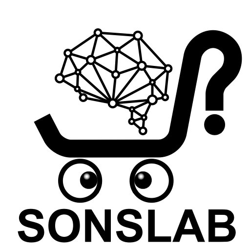
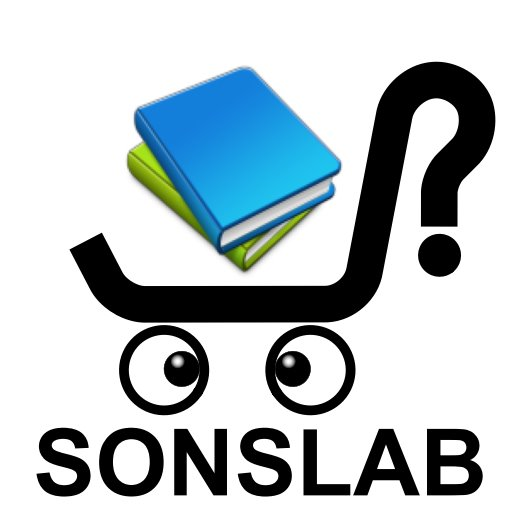
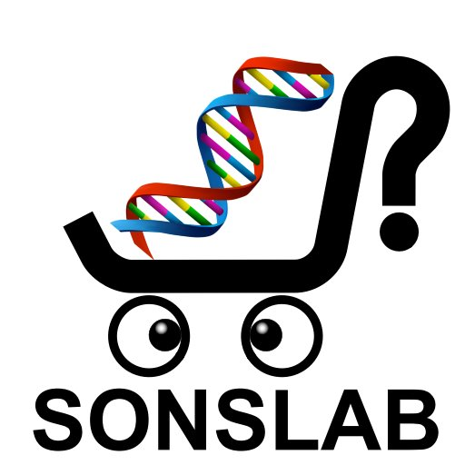
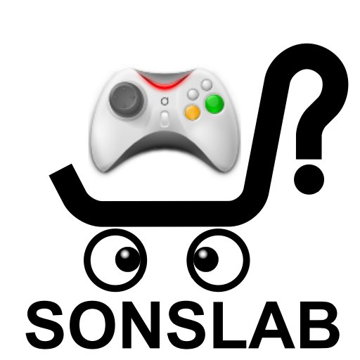
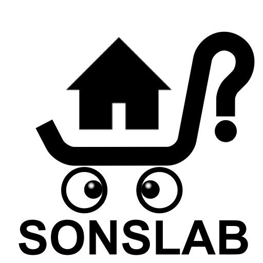
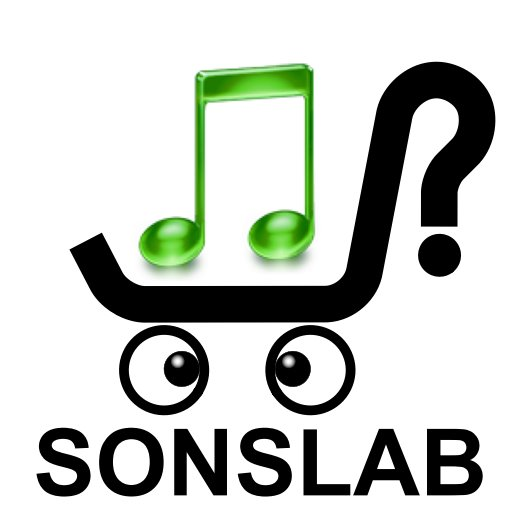
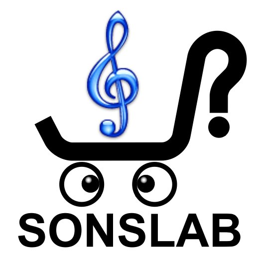
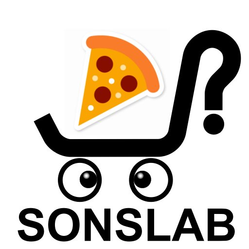
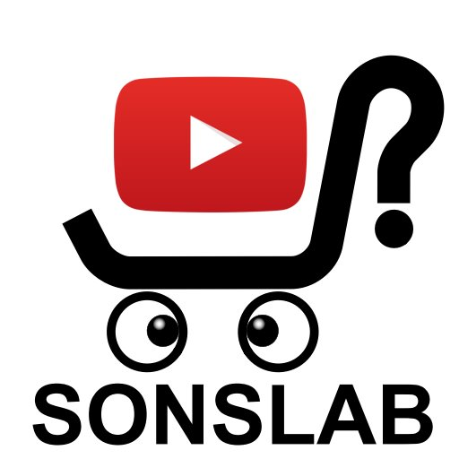
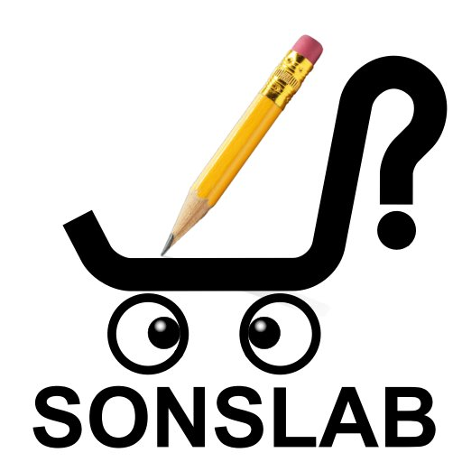
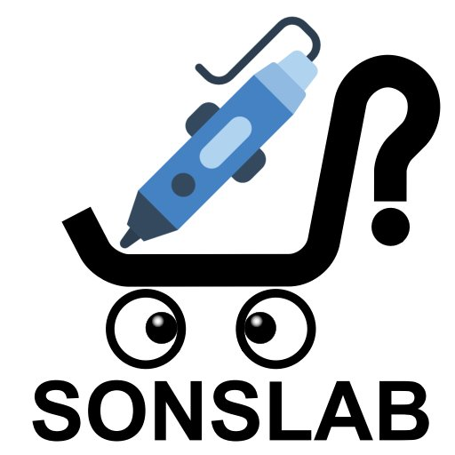
※ 변형 이미지는 assets/logo-variants/SONSLAB(이름).jpg 형태로 보관됩니다.
새 카테고리가 생기면 같은 베이스에 짐만 바꿔 그린 변형을 추가합니다.
한 줄 의미
SONSLAB은 작은 아이디어를 손수레에 싣고, 질문과 실험으로 세상 밖으로 옮기는 창의 실험실입니다.
브랜드 문장 후보
- 아이디어를 싣고, 질문으로 굴러가는 실험실.
- 작은 생각을 현실로 옮기는 창의 손수레.
- 호기심을 싣고, 가능성을 향해 나아가다.
- 질문을 밀고, 아이디어를 나르는 곳.
- 생각을 싣고 세상으로 나아가는 SONSLAB.
SONSLAB이 매일 하는 일
반도체 현직 수석 엔지니어가 매일 4번 올리는 AI · 기술 · 시장 브리핑입니다. 하루 동안 쏟아지는 테크 뉴스 중 현장에서 실제로 의미 있는 신호만 골라 해석합니다. 전자현미경(TEM/SEM) 영상처리 AI와 비전 자동화 플랫폼을 개발하는 엔지니어 관점에서, 반도체 제조 현장과 AI 인프라 · 시장 흐름의 교차점을 매일 기록합니다.
- 저자
- SONSLAB
- 직함
- 반도체 수석 엔지니어 · TEM/SEM 영상 AI 분석 및 비전 자동화 플랫폼 개발자
- 발행 리듬
- 매일 4번 — 새벽(06시) · 오전(12시) · 오후(17시) · 저녁(22시)
- 주요 관심사
- 반도체 팹 · 장비 · 공정 · AI 플랫폼 · 모델 동향 · 빅테크 어닝과 투자 흐름
- 연락처
- starfox1211@naver.com